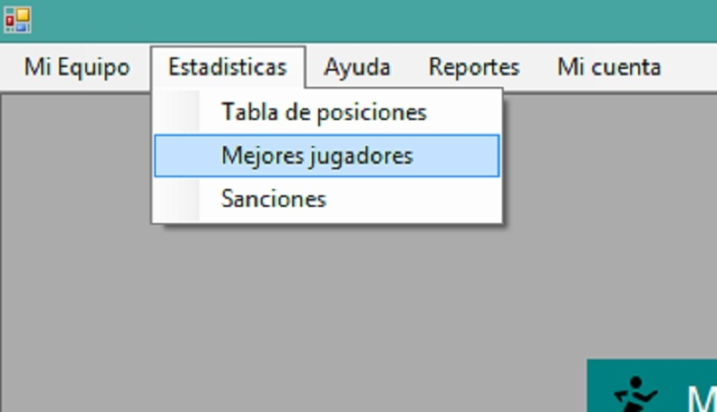

Al abrir la ventana principal del usuario (donde se muestran todas las ventanas), usted podrá observar la barra de menú en la parte superior de ésta:

Damos click en la pestaña "Estadisticas", a continuación click en la opción "Mejores Jugadores":
Podremos ver información a detalle de los jugadores del equipo que han tenido más anotaciones

Puede seleccionar el campeonato en los que el equipo está inscrito para ver a los jugadores que han tenido anotaciones en cierto campeonato

Los registros de los campos variarán dependiendo que equipo se elegió anteriormente en la ventana de "Selección de Equipos:"